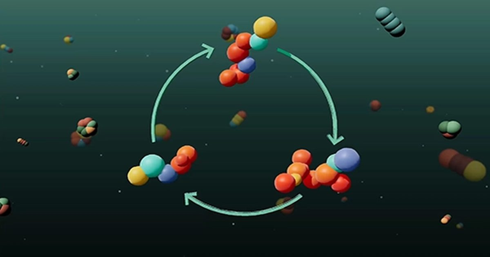

Как древние метаболические циклы работают в клетках кожи
Фундаментальные энергетические пути, возникшие на заре жизни, до сих пор обеспечивают работу каждой клетки кожи. Понимание того, как самоустойчивые химические циклы предшествовали генетике, меняет взгляд на клеточный метаболизм и способы его поддержки в дерматологии.
Первичные циклы ацетил-КоА и клеточная энергия
Путь ацетил-КоА, используемый современными микробами для построения сложных молекул из водорода и углекислого газа, считается одной из древнейших метаболических систем. В клетках кожи аналогичные принципы лежат в основе митохондриального дыхания, обеспечивающего синтез АТФ для процессов обновления эпидермиса и производства экстраклеточной матрицы.
Ученый Уильям Мартин подчеркивает: поток энергии через систему сам по себе организует эту систему, а катализаторы, поддерживающие реакции, эволюционировали от неорганических минералов к ферментам. В дерматологии это находит отражение в роли кофакторов — ионов цинка, меди, железа — без которых невозможна активность матриксных металлопротеиназ и антиоксидантных ферментов кожи.
Самоустойчивые циклы, не требующие генетического кода для запуска, демонстрируют: базовая биоэнергетика клеточки устойчива к внешним воздействиям. Это объясняет, почему даже при нарушении сигнальных путей кератиноциты сохраняют способность к базовому обмену веществам и барьерной функции, если сохранена митохондриальная активность.

Минеральная катализа у гидротермальных источников
Гипотеза «железно-серного мира» Гюнтера Вектершейзера предполагает, что минералы вокруг гидротермальных источников катализировали первые метаболические циклы. В коже аналогичную роль играют следы элементов: цинк в активных центрах карбонангидраз и ДНК-полимераз, медь в лисилазе и супероксиддисмутазе, железо в пролилгидроксилазе коллагена.
Лабораторное моделирование условий источников Мартином и Прейнер в 2020 году показало: никель и железо в присутствии водорода и СО₂ образуют формат, ацетат и пируват — «опорную структуру» пути ацетил-КоА. Эти соединения являются предшественниками аминокислот и липидов, необходимых для синтеза кератина, кераммидов и природного увлажняющего фактора кожи.
Понимание минеральной катализа помогает объяснить, почему дефицит микроэлементов проявляется дерматологическими симптомами раньше системных. Топовые применение ионов цинка и меди в формулировках опирается на их способность восстанавливать ферментативную активность в роговом слое, не вмешиваясь в генетическую программу клетки.

Метаболизм без экстремальных условий: пулы вместо вентилей
Работа Раманараянана Кришнамурти показала: пируват и глиоксилат при мягких температурах и без металлов способны сформировать компоненты обратного цикла лимонной кислоты. Это альтернатива гипотезе источников, переносящая зарождение метаболизма в более умеренные среды — аналог интерстициальной жидкости кожи.
В эпидермисе градиенты рН, осмолярности и кислорода создают микросреды, где метаболические пути переключаются без участия жестких генетических программ. Кератиноциты в гранулярном слое используют анаэробный гликолиз, а в базальном — окислительное фосфорилирование, адаптируясь к условиям как те самые «теплые пруды» первичного метаболизма.
Гибкость метаболических сетей кожи подтверждается способностью фибробластов переключаться на синтез гиалуроновой кислоты или коллагена в зависимости от механических сигналов и гидратации. Это эволюционно древний механизм: сеть реакций реорганизуется под воздействием потока энергии и субстратов, не ожидая транскрипционных изменений.
От хаоса к порядку: генетический контроль метаболизма
Главная проблема прото-метаболизма — стабильность реакций без механизмов наследования. В коже эту роль выполняют эпигенетические модификации и микрорнк, сохраняющие метаболический фенотип клетки при делении. Нарушение этой передачи ведет к дедифференцировке фибробластов и потере функций дермы.
Кришнамурти формулирует вызов: как смешать метаболические циклы в ограниченном объеме клетки, не получив «хаос, который невозможно проанализировать». Органеллы — митохондрии, периоксисомы, ЭПР — решают эту задачу пространственной сегрегацией несовместимых реакций, как это происходит в живом организме миллиарды лет.
Современные пробелы: как метаболические сети координируются при заживлении ран, фотостарении и воспалении без потери точности. Исследования первичного метаболизма показывают: устойчивость систем определяется не жестким контролем, а термодинамической выгодности циклов — принцип, применимый к разработке средств, поддерживающих клеточную энергетику кожи.
Коротко: Древние метаболические циклы, изученные через призму происхождения жизни, раскрывают базовые принципы работы клеточной энергетики кожи. Их устойчивость и адаптивность лежат в основе барьерной функции и регенерации.
Какие аспекты клеточного метаболизма кожи вам кажутся наименее изученными в современной косметологии?